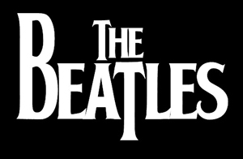
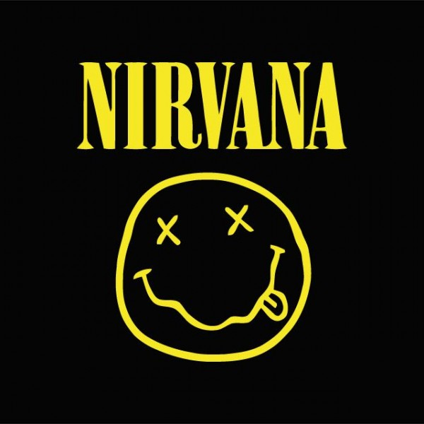

Antes que surgieran The Beatles, el pop británico era considerado, incluso por sus seguidores, como una especie de capricho bufonesco, una gran imitación del rock'n'roll americano, carente de fascinación, frío y poco excitante. La cultura popular británica
estaba fuertemente americanizada en los años cincuenta, y también los jóvenes Beatles se vieron incluidos; eran -como los definió un gran profesor de literatura- unos "americanos imaginarios", hijos de la austeridad posbélica,
cuyo tiempo libre estaba dominado por símbolos de la influencia americana, o bien por los westerns televisivos, los sueños de Hollywood y de las procaces pin-up al estilo de Marilyn Monroe.ç

Nirvana fue una banda de grunge estadounidense procedente de Aberdeen, Washington, Estados Unidos integrada por el vocalista y guitarrista Kurt Cobain y el bajista Krist Novoselic en 1987. Desde su formación, Nirvana pasó a través de una serie de frecuentes
cambios de baterista hasta que en 1990 se les unió definitivamente el baterista Dave Grohl. Nirvana actualmente es considerada como una de las bandas más importantes e influyentes de la era moderna.1 3 A finales de la década de
los años 80 Nirvana se estableció como parte de la escena musical de Seattle con su álbum debut Bleach, lanzado bajo el sello independiente de Seattle, Sub Pop, en 1989.4 La banda finalmente llegó a desarrollar un sonido que se
basaba en los contrastes dinámicos, a menudo versos tranquilos y coros intensos. Un año más tarde, la banda firmó con la discográfica DGC Records y en 1991 lanzó su segundo álbum: Nevermind. El primer sencillo del álbum Smells
Like Teen Spirit, escaló las listas musicales en todo el mundo e inició la explosión de lo que hasta ese momento era conocido como punk y rock alternativo en la escena musical mundial, en un movimiento al que los medios de la época
se referirían como grunge. Además de Nirvana, otras bandas de la escena musical de Seattle como Pearl Jam, Alice in Chains y Soundgarden también ganaron popularidad; como resultado, el rock alternativo se convirtió en el género
dominante en la radio y la televisión musical durante la primera mitad de la década de los 90.5 El líder de la banda, Kurt Cobain se encontró a sí mismo referido en los medios de comunicación como «la voz de una generación» y a
Nirvana como la «banda símbolo» de la Generación X.6 Cobain se sentía incómodo con la atención que se les brindaba y decidió enfocar la atención del público hacia la música de la banda, retando a la audiencia con su tercer álbum
de estudio, In Utero. El álbum no tuvo el éxito ni las ventas esperadas y la popularidad de Nirvana disminuyó en los meses siguientes a la publicación del álbum.7 Sin embargo, buena parte de su audiencia alabó el interior «oscuro»
de la banda, en especial después de su presentación en MTV Unplugged.